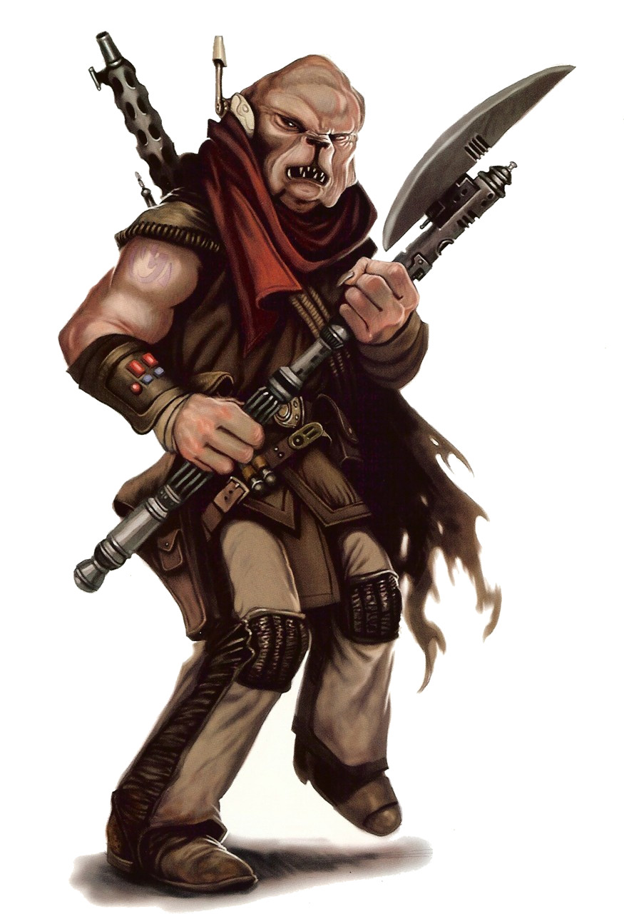

Klatooinian
Special Abilities: Klatooinians begin the game with one rank in either Brawl or Ranged (Heavy) or Ranged (Light). In addition, a Klatooinian starts the game with one additional rank of one non-career skill of his choice. He may not train any of these skills above rank 2 during character creation.
Klatooinians are heavily built humanoids, roughly the height of the average human, descended from canine ancestors on the planet Klatooine. Renowned for their loyalty and devotion, Klatooinians have lived under contracted servitude to the Hutts for more than 25,000 years. First recruited to help defeat Xim the Despot, a galactic overlord vying for control with the Hutts, the Klatooinians signed a "temporary" pact of servitude that is still considered valid by both the Klatooinians and the Hutts today.
Understanding the Klatooinians' fixation with time is essential in order to understand the deeper underpinnings of their culture. Most of their mythology revolves around all-powerful patron-beings known as the Ancients. Tenacity and perseverance are among their most prized cultural traits, and they particularly revere elders of any race. When the Hutts first approached the Klatooinians with a request for assistance against Xim, many on the planet Klatooine came to believe that the Hutts were the Ancients, and that signing a pact of servitude to them was tantamount to agreeing to serve the gods.
The Hutts have dominated Klatooinian culture ever since, with the full blessings of most of the species. A Council of Elders determines Klatooinian affairs, but all offworld relations are in the hands of the Hutts. Klatooinian education is also completely under Hutt control. This has nearly eradicated all early Klatooinian culture and language. As civil war spreads through the Empire, however, some Klatooinians find the courage to break away from the Hutts and strike out on their own.
With thick-set humanoid bodies and heavy, dog-like faces, the fierce appearance of the Klatooinians easily matches their ferocity in combat. The coloration of their flesh ranges from brown to a vaguely green tone, and males and females of the species display few outward differences. Klatooinians often reach nearly two meters in height. Their faces are dominated by heavy brows, blunt noses, and thick, prominent jowls. Klatooinians also possess strong, agile hands, giving them heightened manual dexterity.
Klatooinian society emphasizes loyalty and devotion over everything else while revolving around their near-worship of the concepts of time and age. The planet Klatooine is ruled by a Council of Elders. These members of the species are chosen for their age and experience, as well as how well they are able to articulate their understanding of Klatooinian mythology and culture in a series of ceremonial debates. The Council rules from a palace situated near the Fountain of the Ancients, located in the Derelkoos Desert.
Klatooinian education focuses on written and spoken Huttese, Klatooinian history, and legends that feature Klatooinian species-wide dedication to the Hutts. When a Klatooinian reaches adulthood it is delivered into slavery, at which point its future occupation is decided and more practical training begins. Before eventually being given a position or responsibility, the Klatooinian slave is usually granted more extensive training by his master for specific duties.
The planet Klatooine is an arid world composed primarily of deserts and vast, sweeping grasslands, located in the Si'klaata Cluster at the galactic northern extreme of Hutt Space.
The primary feature of the planet is the Fountain of the Ancients, considered a holy site by all Klatooinians and the seat of secular and religious power. The Fountain is a fissure in the planet's crust that releases liquid wintrium into the dry atmosphere. Wintrium solidifies upon contact with the air and appears like water frozen in mid-flow, continually hardening with age to the point of near indestructibility. After many thousands of years, the Fountain of the Ancients has grown to be a wondrous sight—sprays and waves of liquid frozen in midair.
Klatooinians exclusively speak Huttese on their homeworld, their own language having been purged from their formal education, even on Klatooine. Klatooinians encountered off-planet most likely speak and write Huttese and Basic. Klatooinian scholars or diplomats speak additional languages as needed.
The vast majority of Klatooinians encountered off their home planet began their offworld lives in service to the Hutts. During this period, they receive training in a variety of crafts and trades.
Most remain in this state of perpetual servitude all their lives, content with their place in the galaxy. However, more and more young Klatooinians have thrown off the yoke of servitude to the Hutts and escaped into a life of adventure and exploration. Striving for freedom and possibility, these beings make a living by trading their skills and abilities—most often as mercenaries or bodyguards. Although most Klatooinians tend towards martial work of one type or another, some independent Klatooinians are mechanics or scouts. Some thoroughly reject their initial training in life and embrace a completely different career.
The Treaty of Vontor, signed prior to the final defeat of Xim the Despot, relegated the entire Klatooinian species to perpetual servitude to the Hutts. However, the Hutts did not take into account one element of the Klatooinian cultural character. Although the Klatooinians revere age and experience, they also believe that only time itself is eternal, and all else must eventually fade away. This view is extended to the Treaty of Vontor by the Klatooinians, although they do not speak freely about it before their Hutt masters. In essence, no Klatooinian believes the species can be subject to the treaty for eternity.
With the eruption of all-out civil war against the Galactic Empire, many young Klatooinian students and slaves have decided that the time for the dissolution of the Treaty of Vontor has come. Meeting in secret both on their homeworld and off, these rebels study scraps of ancient texts missed by the purges of the Hutts. Reviving their language and the truth of their ancient myths and legends, they seek to restore the independence of their people.
Fearing the retribution of the Hutts. these rebels tend to congregate in secret enclaves located in remote locations across Klatooine or offworld. The Hutts, aware of the growing unrest, have subjected the Klatooinians to harsher and harsher restrictions, only to find the resistance to their rule growing rather than fading. Many Klatooinians truly believe that the time has finally come for theV people to throw off the shackles of their masters and begin forging their own destiny.